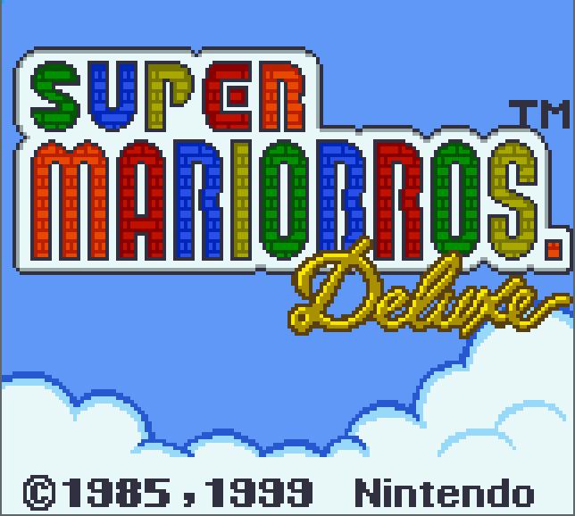
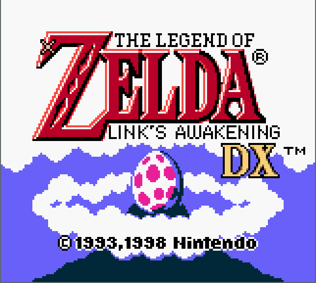
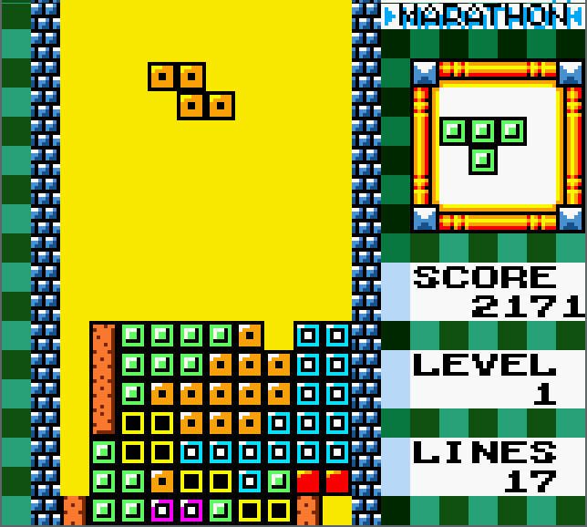
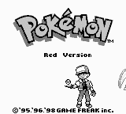
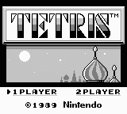

Programming a Gameboy Color emulator
Have you ever wanted to go back and replay that nostalgic video game from your past? As time goes on, it only gets more difficult (and expensive) to track down physical copies of these old systems and game cartridges from decades ago. If you kept looking for a way to play them despite this, you have likely discovered and used emulators.






Screenshots from my emulators, Gameboy Crust and original GB emu.
An emulator is a piece of software that enables programs for one system (the guest system) to run on an entirely different system (the host). Have you ever wondered how they work? Many people who have used emulators (my younger self included) tend to write them off as some kind of black magic witchcraft. However, taking the time to understand how an emulator works under the hood is an incredibly rewarding and educational experience in many ways.
This page will describe what I learned during the process of developing an emulator for the Nintendo Gameboy Color. The host system can be any version of Linux/Windows/MacOS. Pseudocode will be presented in Rust syntax. There are many systems that can be emulated, but the choice was easy for me since the Gameboy was my first videogame console.
Theory
The Gameboy, along with all old video game consoles, are nothing more than simple versions of computers. We know that a computer is a device that can carry out logical tasks. When we view the Gameboy as a computer, the video game cartridges are the ‘programs’ that run on it and tell it which instructions to execute.
An emulator works by virtualy representing the physical hardware of the guest machine. This means that in order to create an emulator for the Gameboy, we have to virtually simulate how the real hardware of the gameboy would function. With this in mind, let’s take a look at the hardware of the Gameboy and how it all interacts so we can form an understanding of how to emulate it in code.
Hardware
The Gameboy has the following hardware features:
- 8-bit Central Processing Unit
- 32Kb Work Random Access Memory (RAM)
- 16Kb Display RAM
- Liquid Crystal Display Screen
- Read Only Memory (ROM) AKA the external video game cartridge
- Joypad Input
- Audio Speaker
- Serial Transfer Port (link cable)
Memory
The Gameboy has a few different types of memory that need to all be emulated:
- Work RAM
- Video RAM
- Cartridge ROM
- External RAM
Memory is one of the easiest things to implement in code.
Regardless of what is actually being stored in each memory location, we represent it in the same way.
We can equate a block of memory in the hardware to simply allocating N bytes of memory in our program:
|
Then all we need are methods to read and write to our virtual memory. The Gameboy has a 16-bit address space, so we can use an unsigned 16-bit integer to index our memory:
|
And that is all that is needed to emulate any kind of physical memory in the Gameboy. The only exception to this is the game cartridge which is read-only memory (ROM). Since this memory is read-only, we do not implement a write method. The ROM is still a contiguous buffer of data, but we read it in from a file instead of initializing an empty vector:
|
Memory Mapping
But what is the point of writing many sub-allocations of memory? Why not just define the entire 64Kb of memory in one contiguous vector?
The Gameboy hardware actually implements virtual memory via memory mapping. This means that logical blocks of memory can be swapped out, but the address range remains the same. This is powerful because the amount of useable memory is not bound by the limit of the address size (2^16 or 0xFFFF)
Consider an example: The 8Kb of video RAM is defined in address space 0x8000 through 0x9FFF. By writing to a special register, the entire 8Kb of VRAM data can be swapped out at will for another bank of 8Kb. This effectively doubles our VRAM to 16Kb while using the same address space.
Since the Gameboy has this scheme of memory management, we must also emulate it. This can be done by defining a struct that has control over all of our memory and interconnects them:
|
Now we can call read and write on any address and not have to care because
the memory mapping and bank switching is handled automatically.
|
Dynamic memory addressing. The write method is similar.
The responsibility of returning the correct data is now passed on to the individual memory modules. It is there that they match the address to the appropriate vector depending on the active memory bank. Since the processor relies on data from memory, it can make use of these methods and is emulated next.
CPU
The Gameboy CPU is a modified version of the 8-bit Zilog-Z80 microprocessor and has the following features:
- Eight 8-bit registers: A, B, C, D, E, F, H, L
- Two 16-bit registers: SP (Stack Pointer), PC (Program Counter)
The 8-bit registers are each 1 byte of internal memory specifically designated for the CPU so it can quickly perform arithmetic. The PC register stores the address of the next CPU instruction to be executed. The SP register stores the top address of a LIFO stack. These registers can be represented easily:
|
The CPU has hundreds of unique instructions that are indexed by an 8-bit value. Each instruction does something important, like performing arithmetic, loading data into memory, comparing values, etc. The CPU runs at 4.19 Megahertz which means that it performs 4.1 million cycles per second. To put that into perspective, my desktop computer has a 4 Gigahertz processor, which is over 1,000 times faster than the Gameboy’s CPU!
Modern video game consoles are running at much higher speeds. this is why emulators for the Playstation, Xbox, or Wii tend to be slower. Not to mention that every single piece of hardware for modern consoles is becoming more and more advanced. This makes reverse engineering and emulating modern consoles an overwhelming challenge to say the least.
But let’s get back to the archaic Gameboy. Each instruction has a varying amount of cycles that it takes. An average instruction takes about 4, 8, or 12 cycles depending on what it does.
The instruction that the CPU will execute next is found at the memory location defined by the program counter (PC) register:
|
The most important part of CPU emulation is the fetch/decode/execute procedure:
|
This procedure reads the next instruction from memory and translates/carries out the task it represents. Each branch returns the amount of cycles taken for that instruction. The Gameboy’s other hardware (video/audio/etc.) is all tied in with the processor speed. Keeping track of the cycles taken is important to keeping all other hardware in sync.
Video Display
Interestingly, the Gameboy has a very smooth screen refresh rate of 60Hz. This means that the screen updates or draws a new frame to the LCD screen 60 times per second. Since we know how many times the CPU cycles per second, it is easy to time our video output. All that we have to do is divide the CPU cycles per second by the number of frames per second:
|
Then the GPU struct needs a variable to count the number of cycles since the last frame.
Once this counter goes above cycles_per_frame, then we know that it is time to draw a frame to the screen.
When the Gameboy is running, there are certain times when the video hardware is accessing video memory. Because games are not allowed to write to video memory when the GPU is reading from it, it is important to emulate and keep track of these hardware timings.
The Gameboy’s screen resolution is 160x144 pixels. A lot of the old video displays update the screen in scan lines going from left-to-right, top-to-bottom. Once a scanline is drawn, the beam goes through a horizontal blanking period where it resets itself far left and one scanline down. Once it has drawn all 144 scanlines, it goes through the vertical blanking period and it resets itself at the top of the screen to start the process again. This rendering process can be emulated by keeping track of the modes.
Special system interrupts are also called when the GPU starts doing something new. This is useful for programmers, because it enables programmers to have special per-scanline video effects.
The meat and potatoes of our GPU is a function that keeps track of the emulated cycles and updates the internal state of the GPU accodringly. Once enough time has passed that a frame can be drawn, the internal framebuffer is cloned and passed to the emulator to be displayed.
|
The internal framebuffer is a vector of bytes sized to the dimensions of our screen:
|
At the end of each scanline, we update the framebuffer with the contents of VRAM.
This is done in the update_scanline function:
|
The Gameboy has 3 distinct video layers that are all made up of 8x8 pixel tiles.
- Background
- Window
- Sprites
The contents of each one are defined in their own special place in VRAM. The background layer is just that. A background of graphics to be drawn to the screen. The window layer is a static layer drawn above the background. The window typically is a blank space that keeps track of player lives/scores, etc. Sprites are the small characters that move on screen, and are typically drawn on top of the background layer.
Each one is rendered slightly differently and the intricacies are beyond what I want to write about in this blog. A full overview of my GPU implementation can be found here.
Joypad Input
There are 4 directional and 4 general buttons on the Gameboy. The game can read/write to a special address in memory to determine the state of the buttons. In order to emulate this, all that is needed is a struct that wraps our host keyboard keypresses to the 8-bit memory register that the game expects to read from.
|
When we press a button on our keyboard, we want to call a funciton that updates the internal state of our joypad. For convenience this can be called at the same interval that we refresh the screen (60 times per second).
|
And the set_button_pressed example method looks like this (set_direction_pressed is similar):
|
Then, whenever the special joypad register is read from, it will accurately return the state of the buttons pressed on your host keyboard, depending on whether the game requests directional or regular buttons:
|
Bringing it all together
The last thing that is needed is a class that ties it all together. The emulator class has our Gameboy object and a window object. We load the ROM file and pass it to our gameboy, and initialize the window.
|
Now we implement a run function that will be called from main and will run forever.
This is the high level function that emulates the Gameboy.
It matches the 4.19Mhz speed of the CPU, and updates the video and reads joypad input at 60Hz:
|
Conclusion
Programming emulators is a very challenging, technical, long, and difficult task. This project took me quite some time, and I had good documentation! I didn’t even have to go through the more difficult process of reverse engineering the system. This project has given me a great deal of respect for the people who are reverse engineering and writing emulators for modern consoles.
Overall, it was a great learning experience. stepping through and debugging an emulator really forces you to learn about the system and it is very interesting to understand how these old game consoles work. I also learned quite a bit about how some of my favorite GB games were programmed.
Documentation
- BGB’s Pan Docs is hands down some of the best documentation out there.
- GB Programming Manual (a document by Nintendo for game developers)
- The emudev subreddit was a tremendously helpful resource and great community.